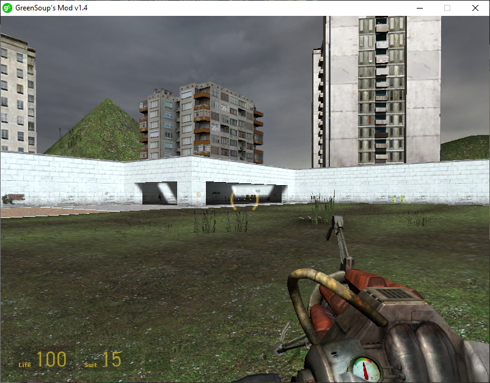
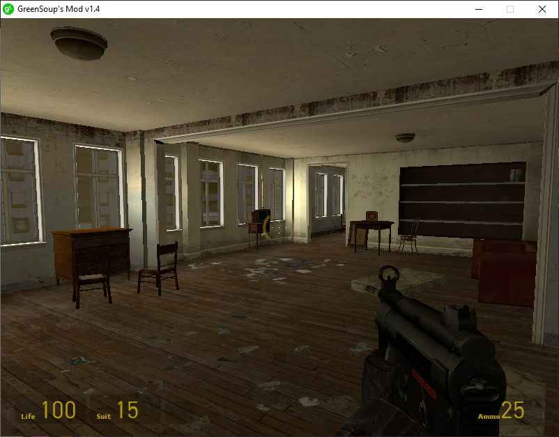

|   |
GreenSoup's Mod is a sandbox Mod for the Source Engine and Half-Life 2 based on Garry's Mod and JBMod. This mod's goal is to have a similar experience to Garry's Mod but Free |
To install GSMOD you need to:
1.Go to Steam, now to Library and search Source SDK Base 2013 Singleplayer and install it.
2.When it finished installing, Download GSMOD and then extract the .7z file with 7zip or WinRAR, and now rename the extracted folder to 'greensoupmod" and copy it, then go to "C:\Program Files (x86)\Steam\steamapps\sourcemods" and paste the folder.
3.Now restart Steam and the mod should appear on your Library, enjoy!
Note: in Source SDK Base 2013 on steam, you need to press the three dots button and go to properties, now go to betas, and in beta participation put "upcoming" and its done